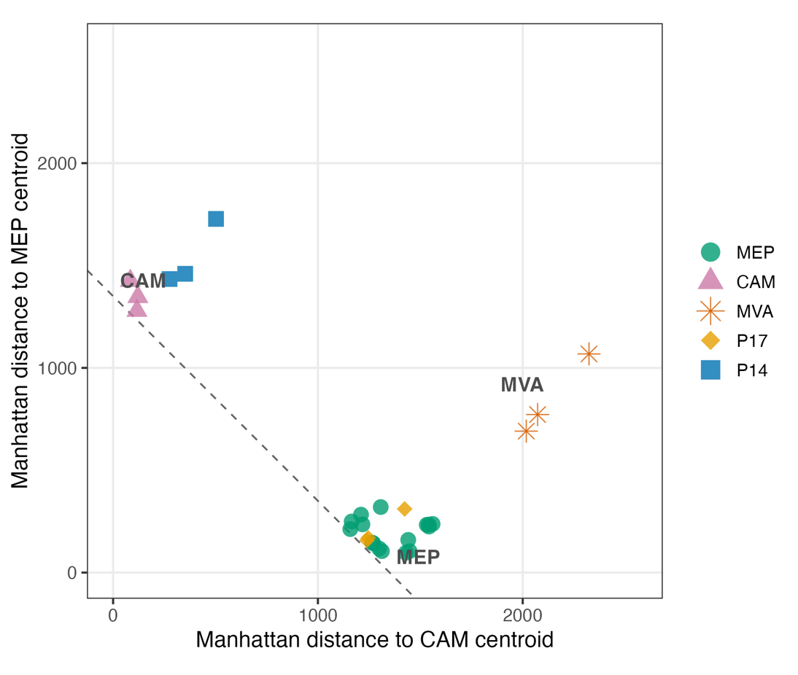

Tracing Carbon Routing into Isoprenoids Without Labels
Natural abundance fragment isotopes reveal how pyruvate enters the MEP pathway in Pachira aquatica

Overview
Plants make isoprenoids in their plastids through the MEP pathway, which assembles carbon from pyruvate and glyceraldehyde 3-phosphate (G3P). Normally, carbon flow into this pathway is traced by feeding position specifically 13C labelled substrates, which only works in controlled experiments.
In earlier labelling work on the tropical tree Pachira aquatica, phytol unexpectedly took up label from both the C1 and the C2 position of pyruvate, although C1 should be lost as CO2. This pointed to pyruvate being rerouted through phosphoenolpyruvate (PEP) to G3P before entering the pathway. This chapter asks whether that routing can be seen at natural abundance.
Methods
I applied fragment specific isotope analysis to phytol from unlabelled leaves of two plants from the same experiment, one with predominant C2 label incorporation and one with substantial C1 incorporation. Their fragment patterns were compared with reference organisms with known pyruvate routing from Chapter 4, and with a carbon flow model that estimates the proportion of G3P derived carbon in each fragment.
Key results
- The plant with predominant C2 incorporation has a fragment pattern that closely tracks the cyanobacterium Synechococcus, which lacks a PEP to G3P bypass.
- The plant with substantial C1 incorporation tracks the CAM plant Crassula ovata, which routes part of its pyruvate through PEP to G3P.
- The difference between the two plants scales with the share of G3P derived carbon in each fragment, pointing to the G3P derived positions of phytol.
Impact
Fragment to fragment isotope patterns carry information about how carbon is routed into the MEP pathway, and that information can be read without any isotope labelling. This opens a route to study isoprenoid metabolism and pathway crosstalk in field samples and organisms that cannot be labelled.
Figures

